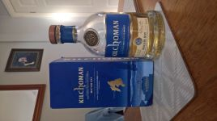
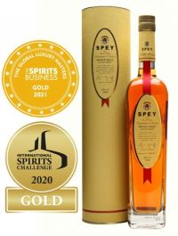

Region - Islay

Kilchomen, Machir Bay, Alc=46%
Notes: The second release from Kilchomen, coming just three months after Sanaig.
This is far more like a 12 year old Bunnahabain or a 5 year old Bruichladdich.
Far less medicinal than the TCP mouthwash flavour in most Laphroig's.
This smells like pine cones and kelp. It tastes cool and fresh, smooth to swallow,
as it slowly warms you from throat to belly.
Region - Speyside

Speyside Distillery, Spey 2020 Chairmans Choice, Alc=40%
Notes: The Chairman in the name refers to the Chair of the Scots Whisky Society.
Multi award winning, including Single Malt Of The Year 2020. What has not
already been said about it. Less intense than a highland single malt, with less
burn. A typical classy Speyside dram. A little boring and it took 10 years of
releases to get it right.
Region - The Lake District
Basenthwaite Distillery, The Lakes No.2, Alc=60.9%
Notes: The first release to the general public as No.1 was only available as a
'White Sprit' for tasting etc. Simply Phenominal, Cask Strength at 60.9%.
That is half as strong again compared to a more commercial brand such as Glen
Fiddich. It smells and tastes like breathing and drinking a lost Wordsworth poem,
yet
with no burn at all. Expensive? = Hell Yes! But worth every penny!
Region - Brecon Beacons
Brecon Beacons Distillery, Penderyn Madeira Cask Finish, Alc=46%
Notes: The tiny Welsh distillery continues to knock it out of the park with
this, the first release to benefit from their barrel stock exchange deal with
the island
of Madeira. The packaging harks back to their first single malt ten years ago.
With the
whiskys distinct Welsh Gold' colour. The matt black box with the sides cut out
is
supposed to look like a mine shaft. Light and floral with a sweet sherry like
after taste. Those
clever Welsh Wizards have done it again. Best of all it is still under £30 a
bottle
from most large UK super markets, How?